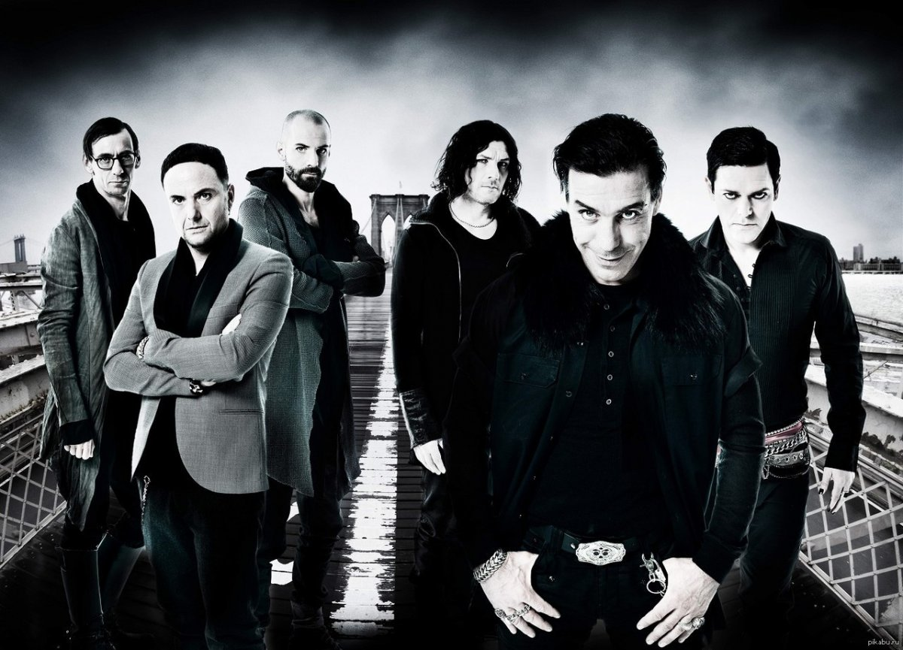

Немецкая метал-группа, образованная в январе 1994 года в Берлине. Музыкальный стиль группы относится к жанру индастриал-метала (конкретно — его немецкой сцене Neue Deutsche Härte). Основные черты творчества группы: специфический ритм, в котором выдержана большая часть композиций, и эпатирующие тексты песен. Особую известность группе принесли сценические выступления, часто сопровождаемые использованием пиротехники, получившие признание в музыкальной среде. Состав группы ни разу не менялся.По состоянию на 2018 год группа продала около 20 млн копий альбомов.
28 августа 1988 года на авиабазе Рамштайн во время авиашоу с участием итальянской авиационной группы высшего пилотажа Frecce Tricolori произошло столкновение трёх самолётов, в результате которого погибли 70 человек и больше трёхсот получили ранения (об этой трагедии рассказывает одноимённая песня «Rammstein» из дебютного альбома группы Herzeleid). Согласно одной из версий, музыкантам Rammstein не было известно об этой трагедии, когда они придумали название группы.Придумано оно было Кристофом Шнайдером, Паулем Ландерсом и Кристианом Лоренцем.
Стиль музыки Rammstein, который сами музыканты в шутку окрестили «танц-метал» (нем. Tanzmetall), преимущественно представляет собой индастриал-метал в духе новой немецкой тяжести. Однако он смешивает элементы как и электронного индастриала, так и альтернативного метала, и других жанров. Многие композиции выдержаны в одном ритме (за что Rammstein и назвали свой стиль «танц-метал»), встречаются и более сложные композиции. Музыканты отрицают непосредственное влияние группы Kraftwerk: «Нам они никогда не нравились». Творчество группы также относят к таким стилям рок-музыки, как хард-рок, готик-метал, ню-метал, симфоник-метал, прогрессивный метал и альтернативный метал.